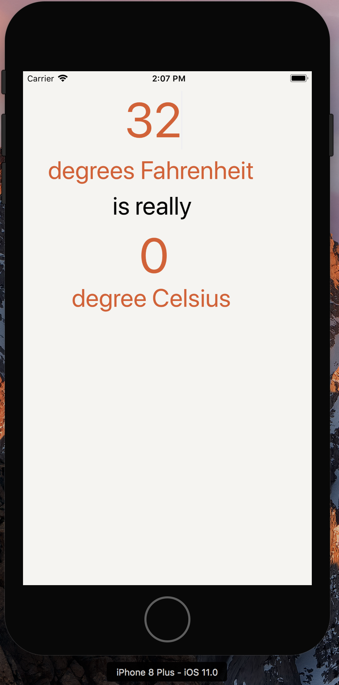

This application is a temperature converter. It converts Fahrenheit to Celsius.

//Property value that updates when the value changes
var fahrenheitValue: Measurement
didSet {
updateCelsiusLabel()
}
}
//Function to convert Fahrenehit to Celsius
var celsiusValue: Measurement
if let fahrenheitValue = fahrenheitValue { //if there is a value, convert to Celsius
return fahrenheitValue.converted(to: .celsius)
} else { //If there is no value, return nil
return nil
}
}
//Formats as decimal, allow no more than 1 fractional digit
let numberFormatter: NumberFormatter = {
let nf = NumberFormatter()
nf.minimumFractionDigits = 0
nf.maximumFractionDigits = 1
return nf
}()
//Any time Fahrenheit value changes, Celsius is updated, formats value to allow no more than 1 fractional digit
func updateCelsiusLabel() {
if let celsiusValue = celsiusValue {
celsiusLabel.text = numberFormatter.string(from: NSNumber(value: celsiusValue.value))
} else {
celsiusLabel.text = "???"
}
}
override func viewDidLoad() {
super.viewDidLoad()
updateCelsiusLabel() //celsius label updated when application is first launched
}
//Function dismiss the keyboard
@IBAction func dismissKeyboard(_ sender: AnyObject) {
textField.resignFirstResponder()
}
//Will not allow user to enter two decimal seperator
func textField(_ textField: UITextField, shouldChangeCharactersIn range: NSRange, replacementString string:
String) -> Bool {
let existingTextHasDecimalSeparator = textField.text?.range(of: ".")
let replacementTextHasDecimalSeparator = string.range(of: ".")
if existingTextHasDecimalSeparator != nil && replacementTextHasDecimalSeparator != nil {
return false
} else {
return true
}
}
//Allow label to mimic text that is typed
@IBAction func fahrenheitFieldEditingChanged(_ textField: UITextField) {
if let text = textField.text, let value = Double(text) { //check for text and whether
it can be reprsented as a Double
fahrenheitValue = Measurement(value: value, unit: .fahrenheit) //Fahrenheit value set to measurement
} else {
fahrenheitValue = nil
}
}
Here's another simple temperature converter Video
Here is the book we used to complete this application:
iOS Programming The Big Ranch Nerd Guide Chapter 4.